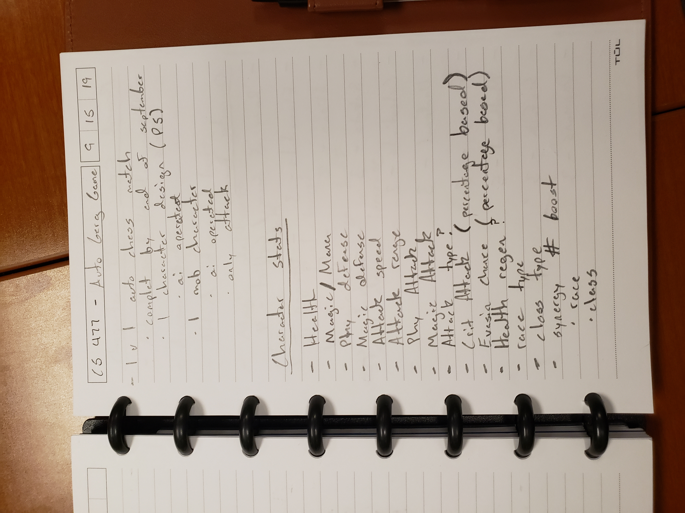
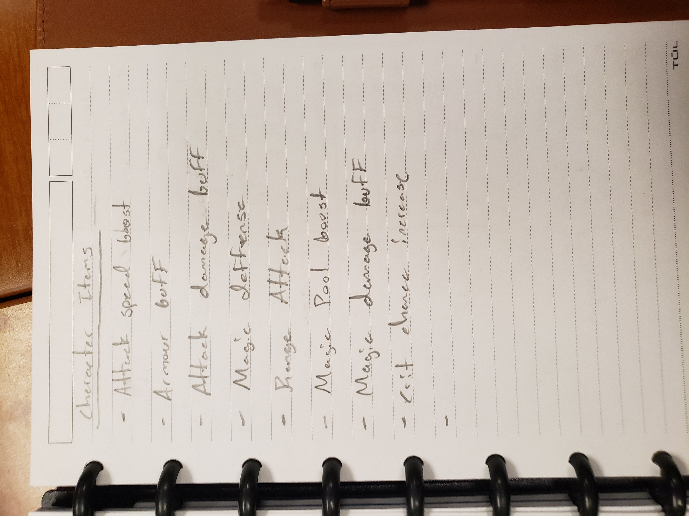
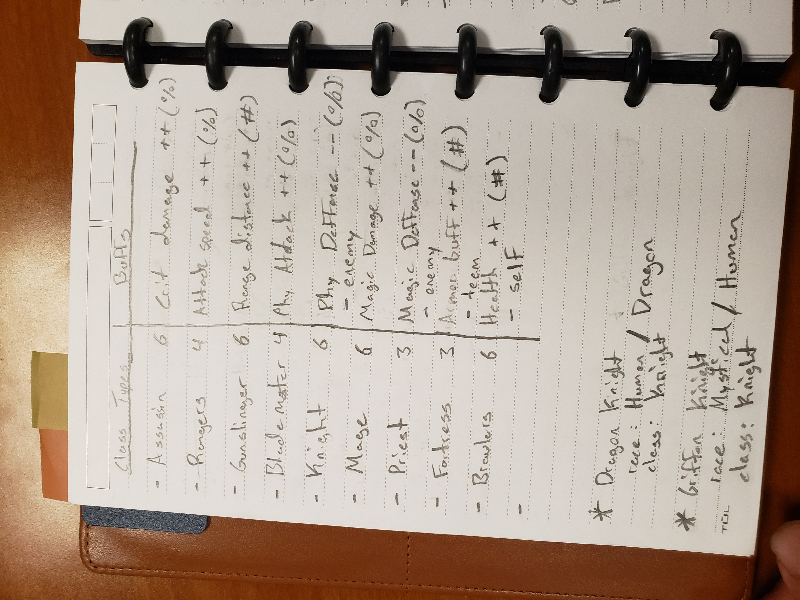
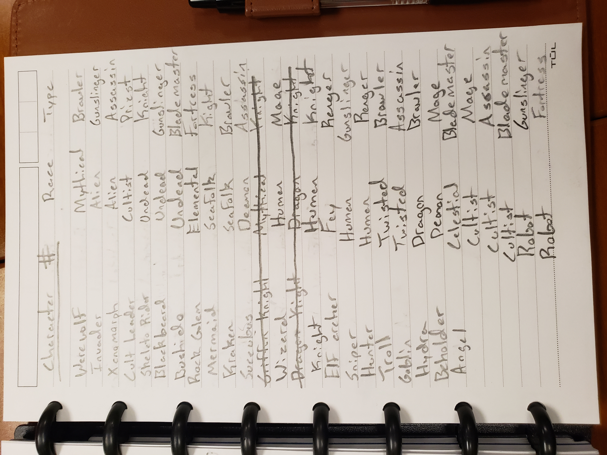
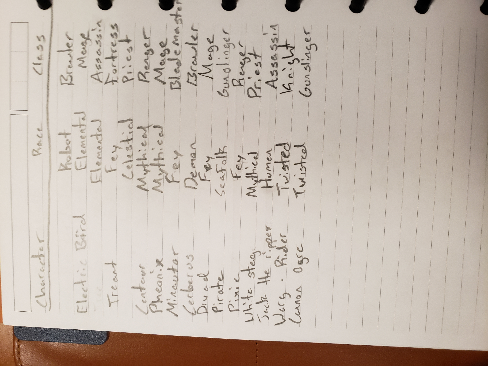
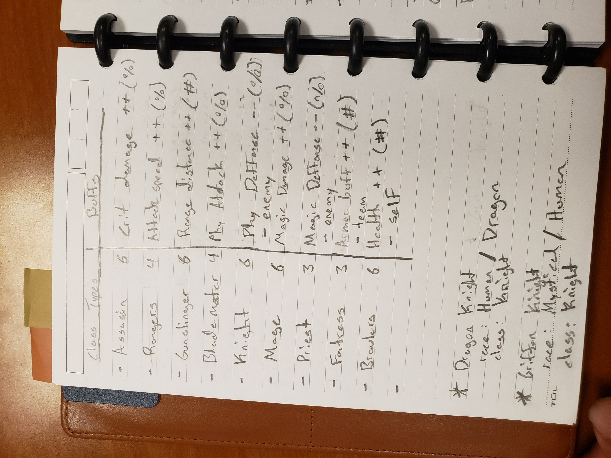
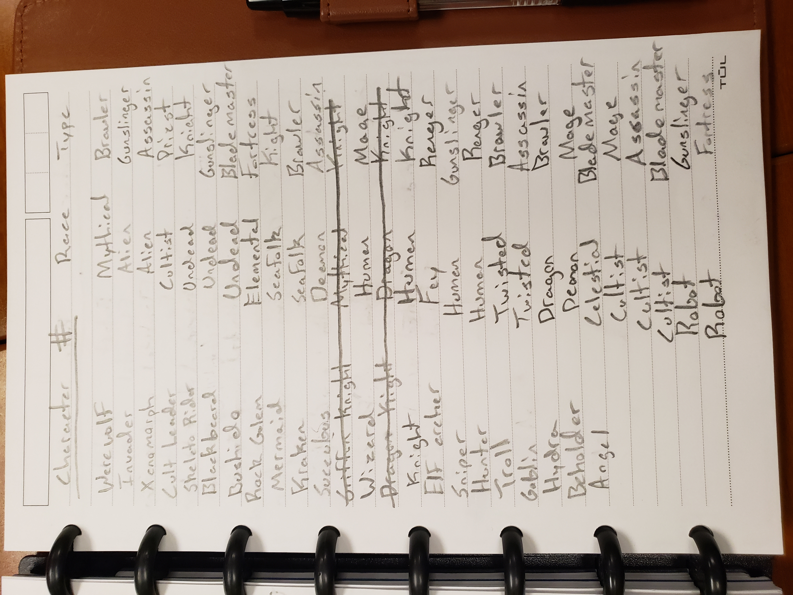
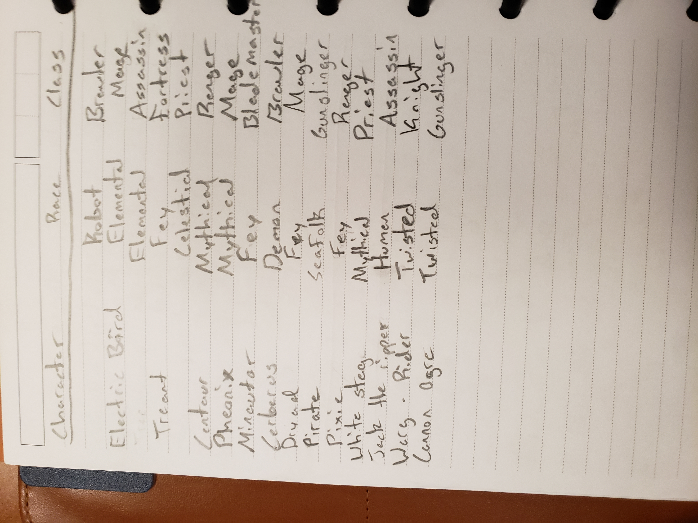

Auto Gerg
(A new take on autobattlers)
Auto Gerg is a project my friends and I designed for Game Design and Human-Centered Computing classes. We wanted to make an autobattler much like TFT, or Auto Chess, but we wanted to make it our own. That is where Gerg came in. The name Gerg is a play on our friend's name Greg, (which was just his name spelled backwards,) who was the previous president of the game development club. Greg was a good friend of ours who graduated the semester before and because Gerg had become a meme within the Game Dev Club, we decided to use the name as a stepping stone in our game. One of the classes the characters in the game was called the cultists which ideally would summon GERG if the requirements were met who was designed to be one of the more powerful characters the player could use.
Gameplay
Auto Gerg was designed to be an autobattler similar to TFT and Auto Chess. If you are not familiar with these games, they are essentially several players picking and choosing characters and setting them on their side of the field. The player's characters then fight one another.
For our game we decided to make a 2-player local version of autobattlers. We made several characters split into 3 different classes, each with their own stats, strenghts and weaknesses. Although with the time we were given, we did not quite get the chance to finish the game, We managed to have a decent prototype for what we wanted the game to become. The game lacked character models and animations above all else since we did not have anyone on our team capable of doing that. However what we did have the knowledge and skills to do, we ensured that we put our all into it.
Github


Concept Sketches
Below are a few concepts we had for future implementations, characters, and other information.
  




